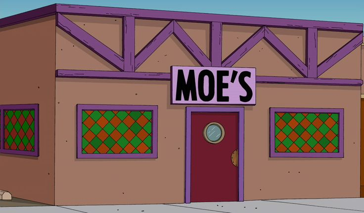
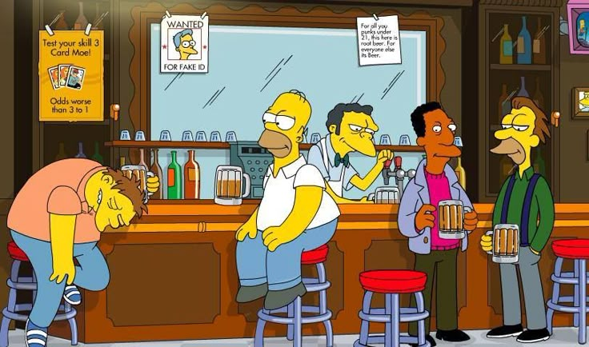
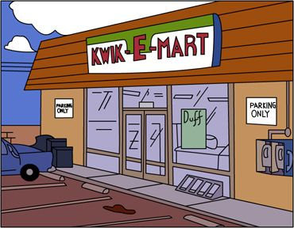
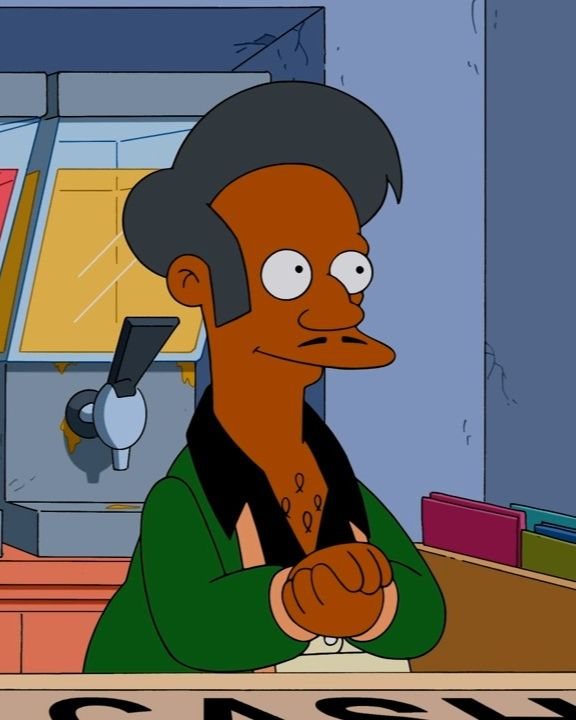
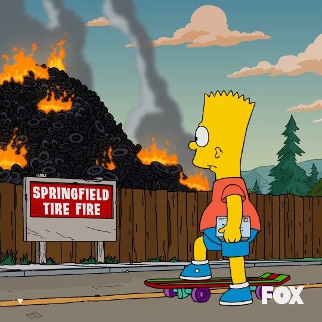

Los lugares mas piolas de Springfield
En esta sección encontrarás los lugares más interesantes y divertidos de Springfield. Desde restaurantes hasta parques, te mostraremos lo mejor que esta ciudad tiene para ofrecer.
Donde algunos lugares son muy significativos de esta hermosa ciudad
El Bar de Moe
El Bar de Moe es el lugar perfecto para relajarse y disfrutar de una bebida refrescante. Es conocido por su ambiente acogedor y su servicio amable.
Cosas que se pueden hacer en el Bar de Moe:
- Tomarte un buen Fernandito.
- Desahogarte de guapo con Moe.
- Cagarte bien a trompadas con cualquier gil.


Kwik-E-Mart
El Kwik-E-Mart es la tienda de conveniencia más famosa de Springfield. Aquí puedes encontrar una gran variedad de productos, desde snacks hasta artículos de primera necesidad.
Cosas que se pueden hacer en el Kwik-E-Mart:
- Comprar papelillos.
- Comprar comidas vencidas.
- Cagar a puteadas al vendedor Apu.


Incendio de neumáticos de Springfield
El Incendio de neumáticos de Springfield es un evento anual que atrae a visitantes de toda la región. Es una experiencia única que combina emoción y adrenalina.
Cosas que se pueden hacer en el Incendio de neumáticos de Springfield:
- Quemar cualquier cosa.
- Sacarse fotos farmeando aura con el fuego atras.
- Desarrollar dificultad respiratoria.

